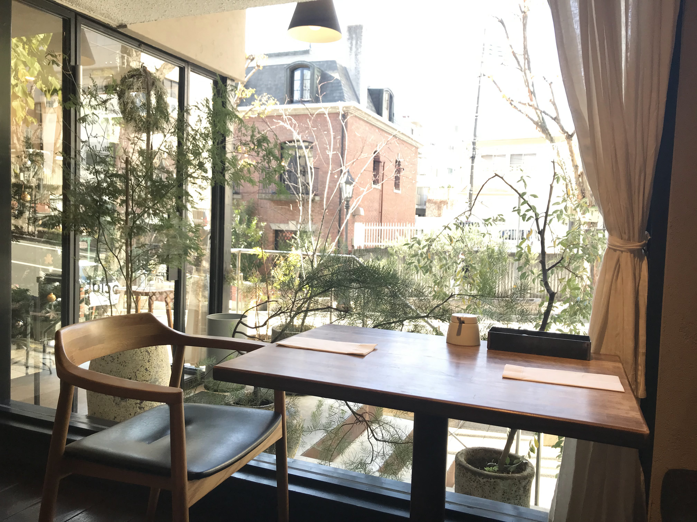
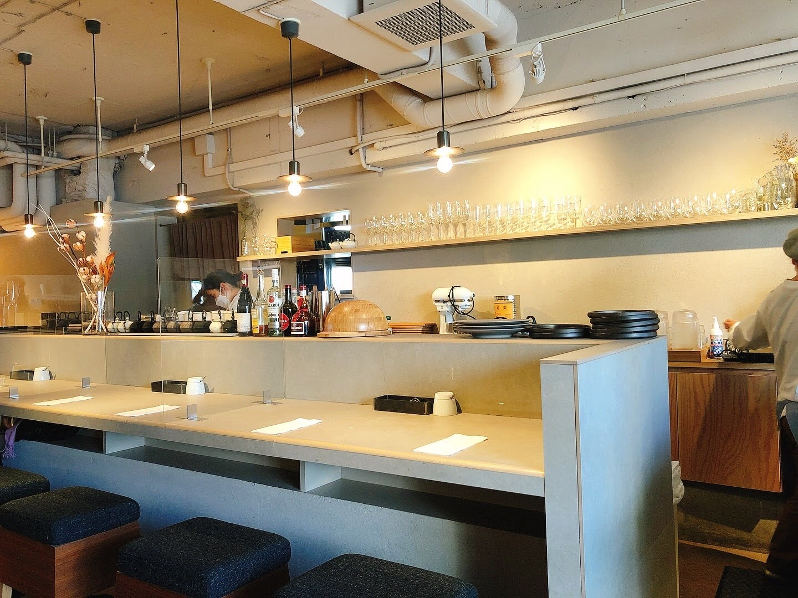
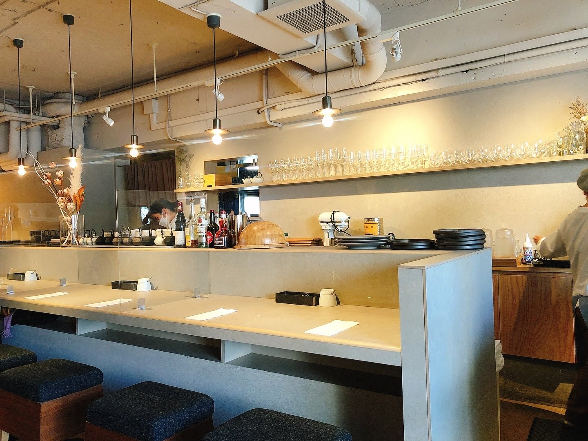
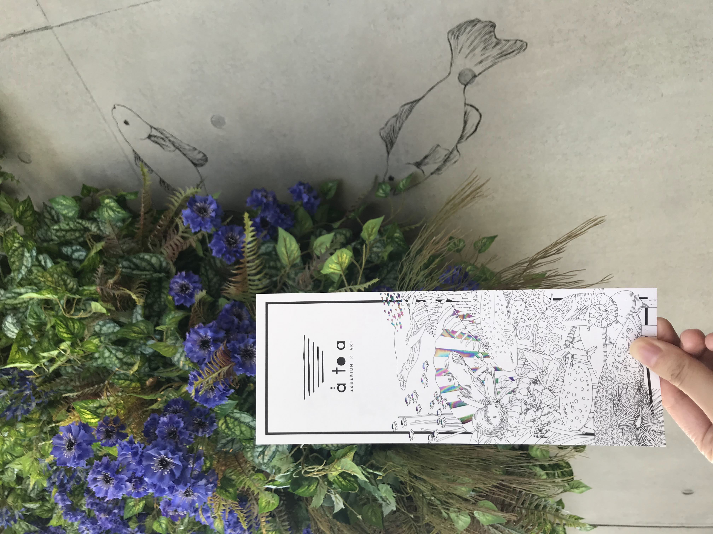
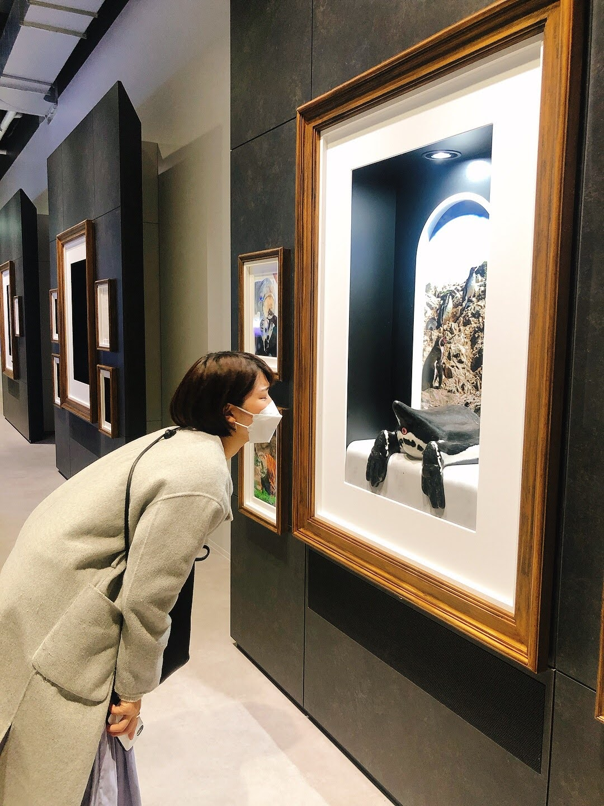
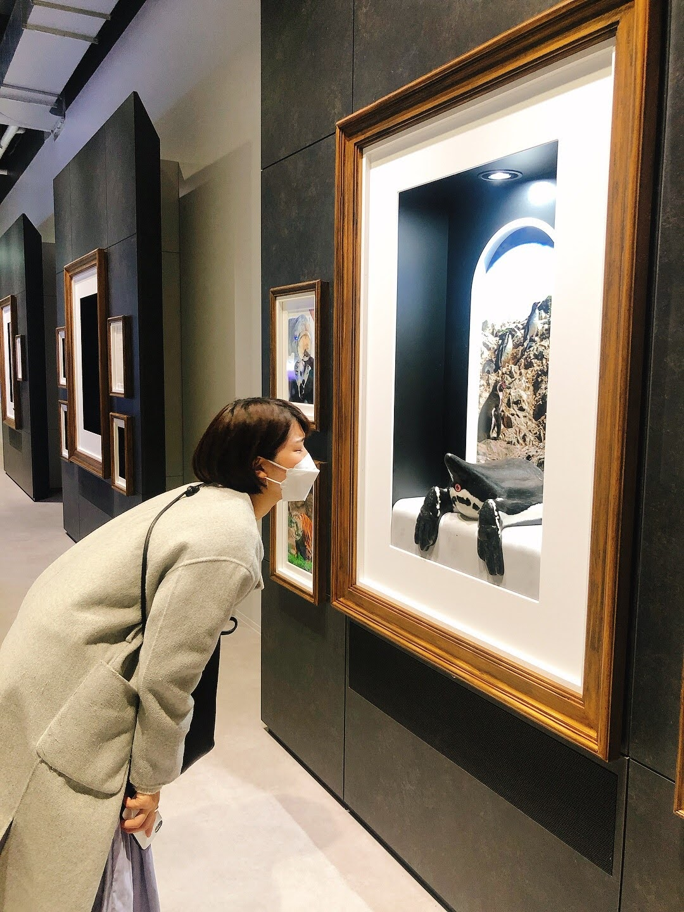

神戸旅行 2021/12/08-2021/12/09
神戸旅行！仕事終わりに友人と休みを合わせて近場旅行！ 今回はお洒落モーニングと、話題の水族館を紹介します◎
お洒落モーニング
dining social（ダイニングソシアル）
……超素敵なモーニング
住所： 兵庫県神戸市中央区山本通1-7-15 東洋ハイツ 1F

友人が選んでくれたお洒落モーニング！
朝９時半ごろに伺いましたが、すでにお客さんが沢山いました。
お客さんは多かったですが、すごく落ち着いた雰囲気で日差しも心地よく良い空間でした
モーニングメニューは３種類ほどあり、今回は玉子サンドをいただきました。
お店の雰囲気も最高でした…！
 

話題の水族館！
átoa （アトア）
… 2021年10月29日オープン！
劇場型アクアリウム
住所：神戸市中央区新港町7番2号神戸ポートミュージアム２F～4F

神戸旅行の一番の目的！！2021年10月29日にオープンした劇場型アクアリウム átoa （アトア）へ！元町駅から徒歩で少し歩き海の近くにあります！
劇場型アクアリウムという聞きなじみのない場所で、前知識なしで向かいました！ 入ってびっくり、光や色が沢山使われておりすごくキレイな場所でした！ ただ、キレイなだけでなく動物のおしりの臭いを嗅ぐことのできるコンテンツや カピバラやカメなども見ることもできて色々と楽しめる場所でした！
ペンギンのおしりの臭いは強烈

 
